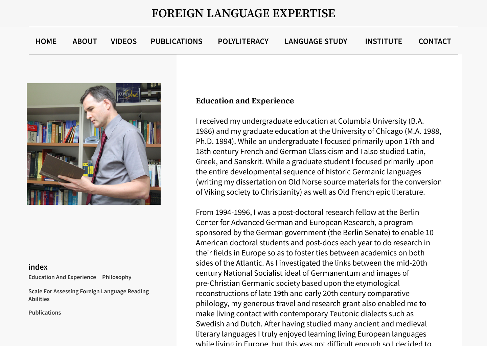
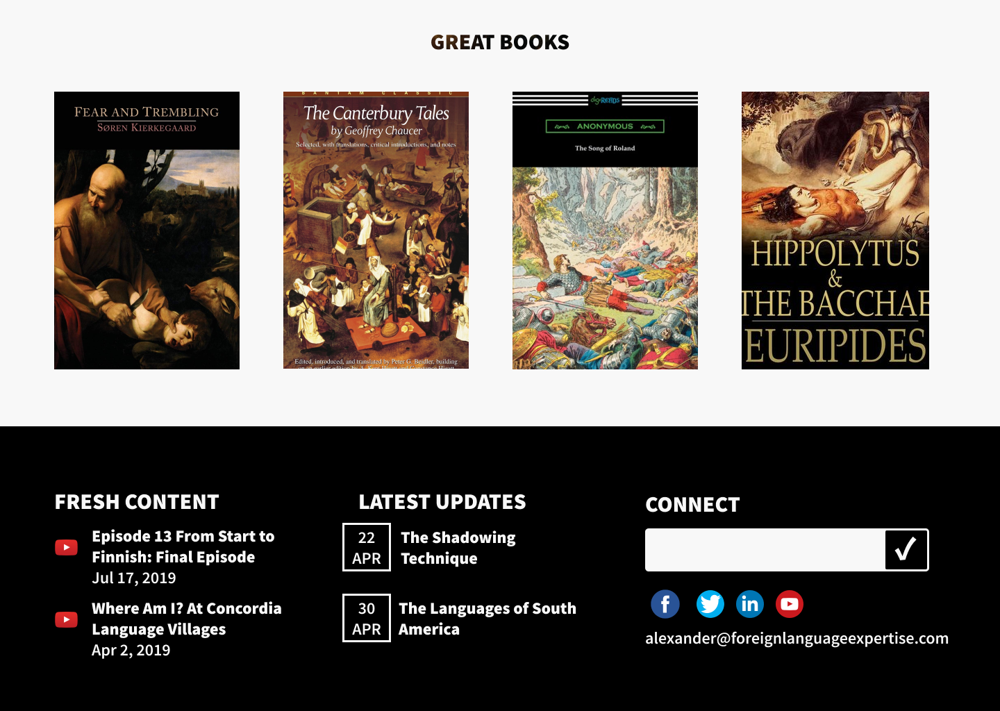
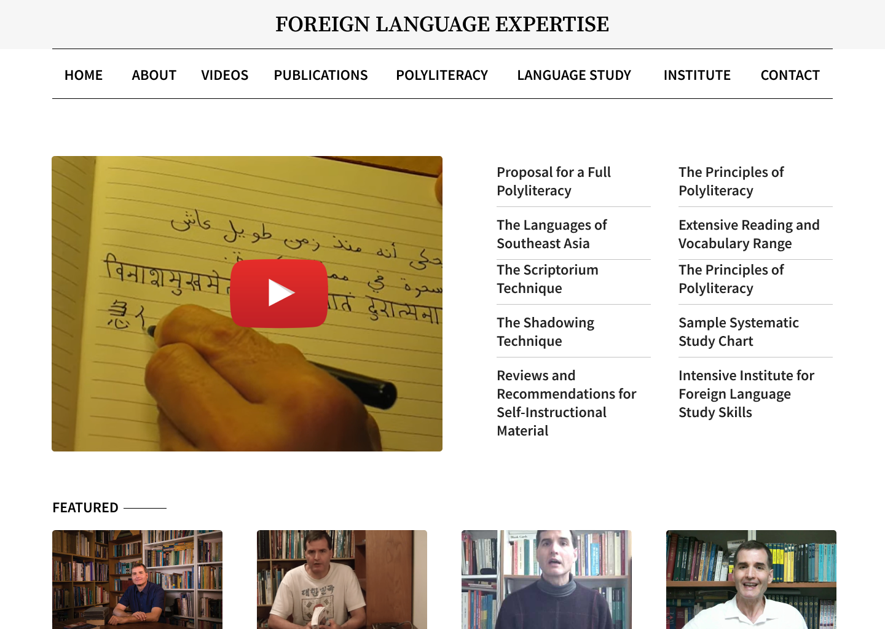

ProjectForeign Language Expertise
Professor Arguelles started Foreign Language Expertise with one goal alone, to spread his love for languages to others. He created the website in 2008 and thus the need for an update. A clean and modern look will reach experts and younger enthusiasts alike.
Tags: HTML, SCSS, PUG, JS



